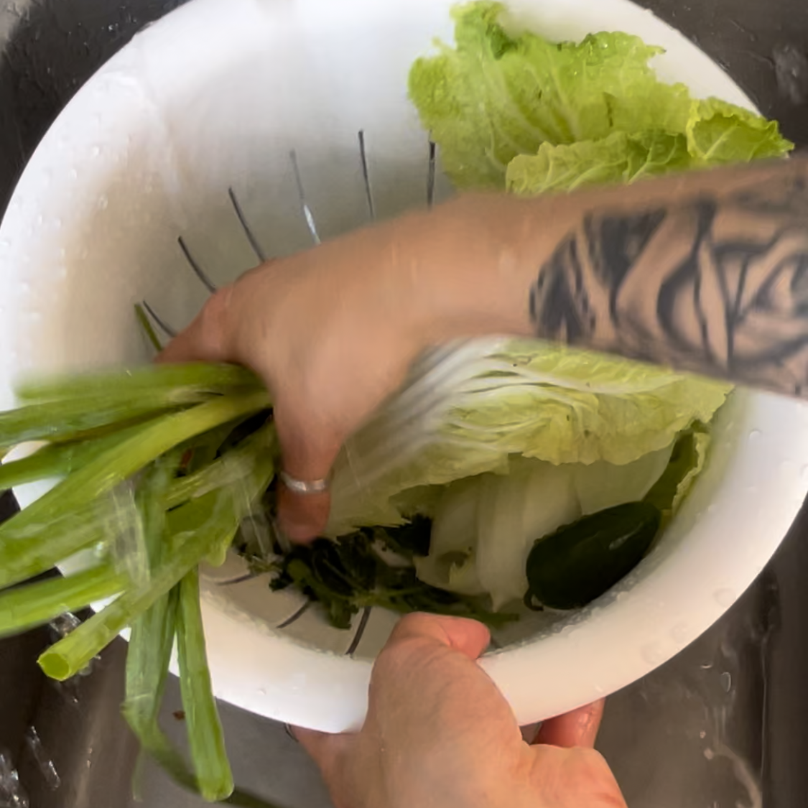

“Neoguri Spicy Seafood Ramen”. Even the name brings back a rush of nostalgic senses. The crinkle of the aluminum packaging being torn open. The warm, spicy smell as the flavor packet is emptied into the boiling water and spreads through the house. As a kid, it was always a “treat” when I got to eat it, especially when dad was the chef. He made it perfectly. Even though this ramen might not bring back childhood memories, I hope this recipe can fill your childhood soul with comfort as you enjoy this hearty, flavorful meal.
directions
- fill the pot with about 2 cups of water and heat on stove top using medium heat. put a lid on and bring to boil.
- wash veggies with cold water and let drain in strainer. 
- peel the onion. tip: use a knife to peel any skin that doesn't want to come off
- chop veggies! white onion, garlic, and jalapepeño can be sliced into slivers.
- de-shell and dry the shrimp; save the shells. cut beef as thinly as possible.
- once the water in the pot is boiling, blanch the napa cabbage for 2 minutes. remove and save water; you can reuse it.
- soft boil the egg. using the boiling water from blanching, place egg in and cover for 6 minutes. remove and immediately place in cold water or ice bath. dump water and replace on element.
- cook the shrimp. after cooked, add butter to crisp.
- add the ramen to boiling water and empty flavor packets. after 3 minutes, add the vegetables on top.
- add beef to bottom of bowl, then pour the pot on top and let sit for 5 to 10 minutes to cook the beef. lastly, enjoy!